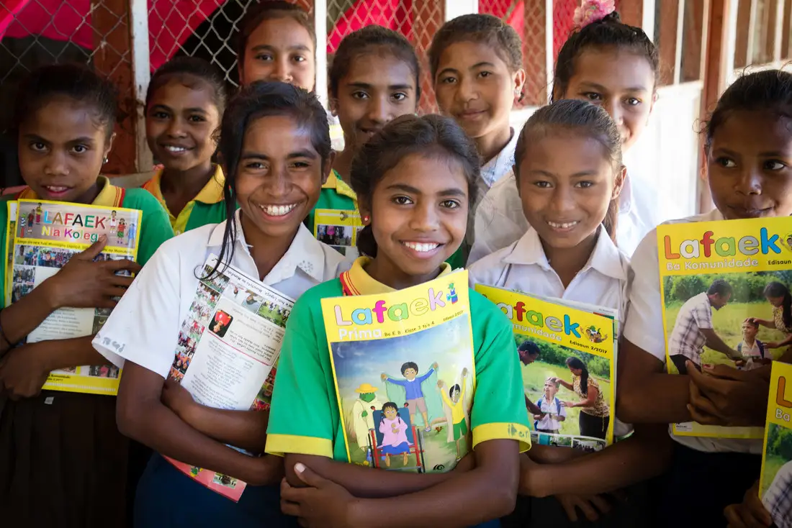
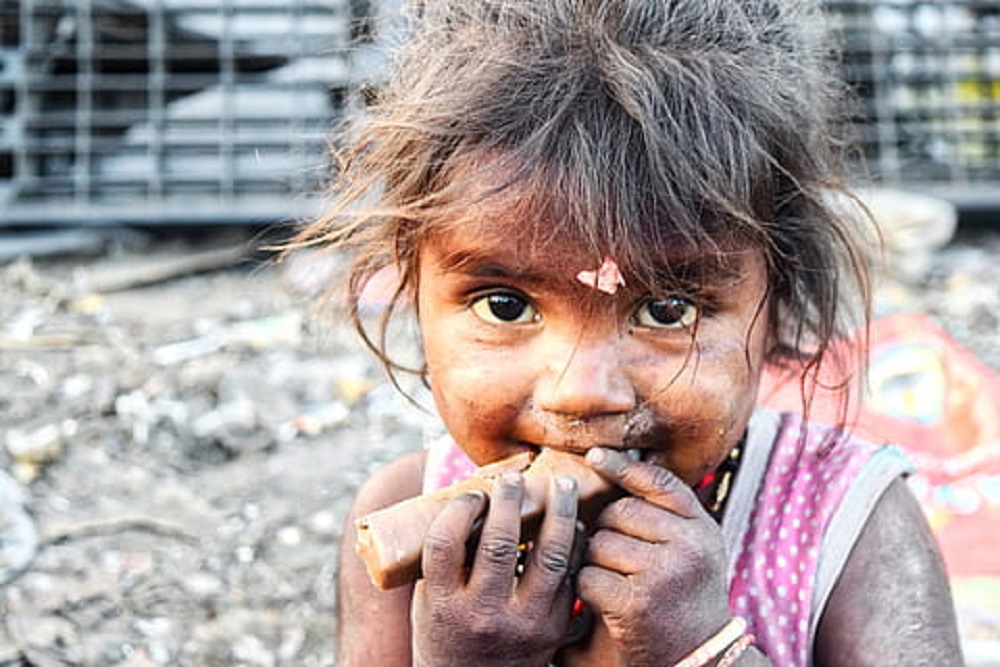
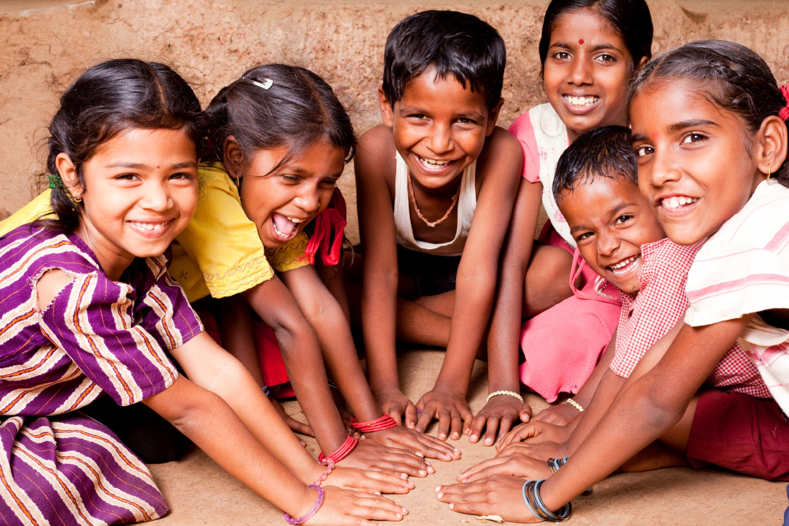

Education.
We work to ensure children are educated for life through
collective efforts.

Nutrition.
We work to address the causes of malnutrition with special focus
on children below 5 years

Livelihood.
Our livelihood interventions enable families to enhance income
and provide better for their children.

Our vision
Our NGO is founded by visionaries who felt the need to build a free of cost medical
facility for people who cannot afford medical fees where the best, most advanced, ethical
and highly skilled medical care is readilyavailable. Main mission is to connect and empower
people protectors to achieve rights by advocacy, networking and capacity building to create a
high-impact which will continually address ongoing health issues.